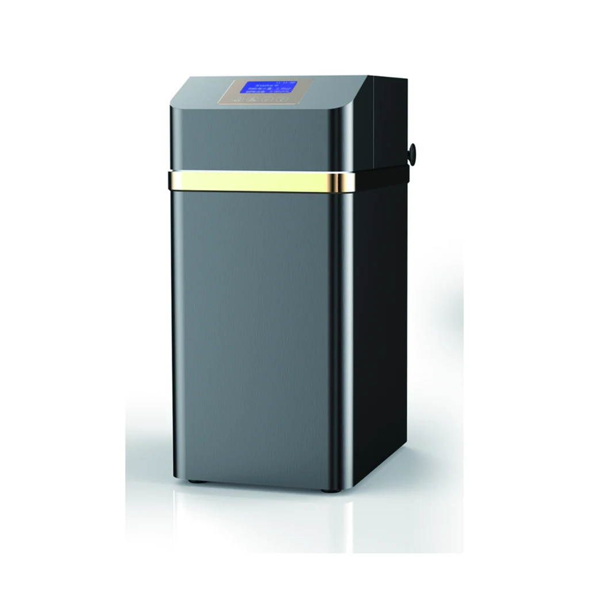

YC-R1000
- Valve Type
- Automatic Softener valve
- Regeneration Mode
- Meter Timer Mix/Timer
- Working Pressure
- 0.15-0.5MPa
- Power Supply
- 220V/110 50Hz
- Inlet & Outlet size
- 3/4"
- Drain Size
- 12mm
- Working Temperature
- 5~48℃
- Brine Valve
- Yes
- Resin Volume
- 12L
- FRP Tank Size
- 1015
- Flow Rate
- ≤1.0T/H
- Product Size(with By-pass)
- 270X420X510mm